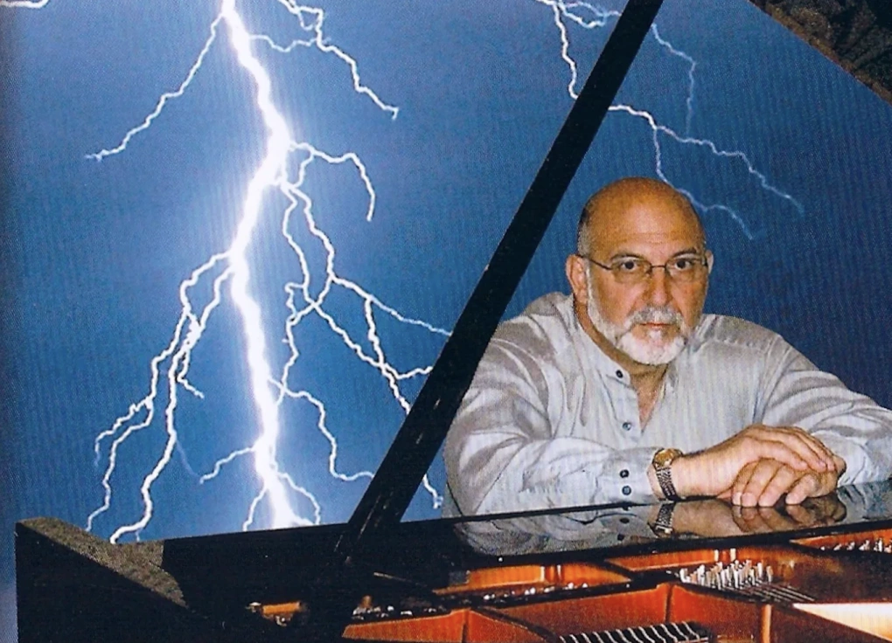

Bác sĩ thành thiên tài piano sau khi bị sét đánh
Sau cú sét đánh suýt chết, bác sĩ phẫu thuật Tony Cicoria bất ngờ có được tài năng âm nhạc, bắt đầu cuộc đời thứ hai với những bản sonata khi đã ở tuổi trung niên.
Tony Cicoria sinh năm 1952 ở ngọai ô New York. Năm 7 tuổi, ông được mẹ cho học piano nhưng chỉ được một năm rồi bỏ. Ông học y và trở thành bác sĩ phẫu thuật chỉnh hình ở thị trấn Oneonta. Cuộc sống bận rộn để cùng vợ nuôi ba con.
Năm 1994, trong buổi dã ngoại gia đình bên hồ Sleepy Hollow, New York, Tony Cicoria bước đến buồng điện thoại công cộng để gọi cho mẹ. Khi vừa cầm ống nghe, một tia sét đánh vào đường dây, phóng điện qua điện thoại và trúng vào mặt ông.
Cú sét hất ông văng khỏi buồng điện thoại, ngã xuống đất, bất tỉnh. Một người lạ phát hiện và đưa ông đến bệnh viện. Ông tỉnh dậy trong cơn đau dữ dội, chân nóng rát như bị que sắt nung chạm vào. "Đó là trải nghiệm cận tử", ông nói.
Vài tuần sau, khi đầu óc dần tỉnh táo, ông nhận thấy mình thay đổi lạ thường, xuất hiện khao khát mãnh liệt được nghe nhạc cổ điển.

Ông Tony Cicoria trong buổi hòa nhạc ở New York vào năm 2008.
Ông mua đĩa nhạc Chopin do nghệ sĩ Vladimir Ashkenazy trình bày, nghe đi nghe lại. Niềm yêu thích biến thành thôi thúc học đàn, dù ông chưa từng có kinh nghiệm và đôi tay còn vụng về.
Hai tháng sau, ông liên tục mơ thấy mình ngồi trên sân khấu, chơi một bản nhạc do chính mình sáng tác. Giấc mơ lặp lại nhiều lần, thôi thúc ông viết nên tác phẩm The Lightning Sonata (bản Sonata sét đánh).
Âm nhạc trở thành đam mê cháy bỏng. Mỗi ngày, ông dậy lúc 4h sáng để tập piano đến 6h, làm việc ở bệnh viện suốt 12 tiếng, rồi lại trở về luyện đàn đến nửa đêm.
Ông chỉ tập trung vào những giai điệu xuất hiện trong đầu, gọi đó là "nàng thơ" của mình. Năm 2004, ông ly hôn, bởi vợ không chịu được cảm giác chồng dành quá nhiều thời gian cho âm nhạc.
Nhà thần kinh học Oliver Sacks tìm đến nghiên cứu trường hợp của Tony Cicoria và ghi lại trong cuốn Musicophilia. Ông xem đây là một hiện tượng hiếm trong thần kinh học, sau khi bị sét đánh, Tony xuất hiện sự khởi phát đột ngột về âm nhạc (sudden musicophilia).
Cú sét gây tổn thương não, kích hoạt vùng liên quan đến cảm xúc và âm nhạc ở thùy thái dương, khiến não bộ tái cấu trúc và tăng cường kết nối thần kinh. Ông so sánh trường hợp này với những bệnh nhân bị chấn thương não sau tai nạn rồi bỗng phát triển khả năng sáng tạo nghệ thuật, như người mắc hội chứng Williams.
"Trải nghiệm cận tử cũng có thể góp phần làm thay đổi tâm lý, khiến ông trở nên nhạy cảm, sáng tạo hơn", Sacks nói. Đây là một ca đặc biệt trong y học thần kinh, song cơ chế chính xác đằng sau hiện tượng này vẫn chưa được làm sáng tỏ.
Sau khi được nhắc đến trong Musicophilia, Tony Cicoria trở nên nổi tiếng. Năm 2008, ông biểu diễn trong buổi hòa nhạc có hàng nghìn khán giả, được BBC, Đài Truyền hình Đức và Granada ghi hình.
Ba tháng sau, ông nhận được cuộc gọi từ trưởng khoa âm nhạc Đại học New York, mời biểu diễn tại Trung tâm Nghệ thuật Mỹ. Đó là khởi đầu cho cuộc đời thứ hai của Tony Cicoria.
Ông tiếp tục sáng tác và biểu diễn, từ các bản piano độc tấu đến những tác phẩm lớn hơn như giao hưởng và concerto lấy cảm hứng từ nhạc sĩ Brahms, thu về hàng triệu lượt xem.
Cuối năm 2024, Tony Cicoria xuất hiện trên Instagram và podcast Interviews with Innocence, kể hành trình từ bác sĩ thành "thiên tài âm nhạc bất ngờ".
Tháng 6/2025, ông biểu diễn trực tuyến trong chương trình trực tiếp của MES, đồng thời hoàn thiện cuốn sách Bên Kia Của Sự Sống (On the Other Side of Life), viết về mối liên hệ giữa trải nghiệm cận kề cái chết và âm nhạc.
Hiện, Tony vẫn hành nghề tại St. Joseph Healthcare và tham gia giảng dạy về trải nghiệm cận tử.